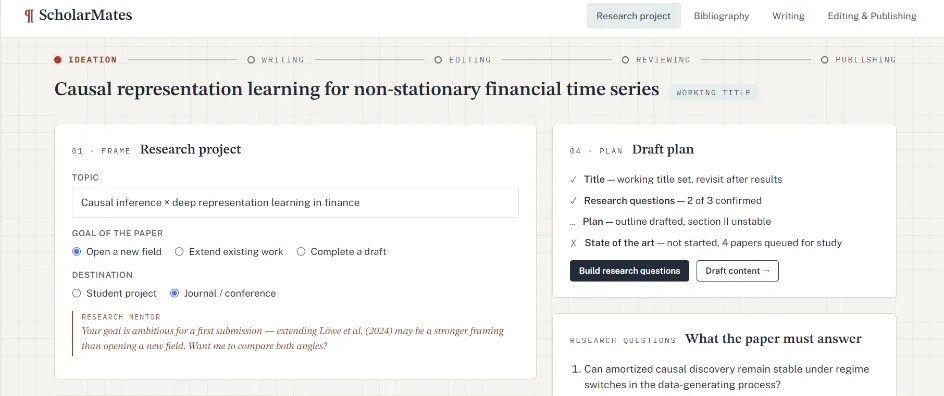
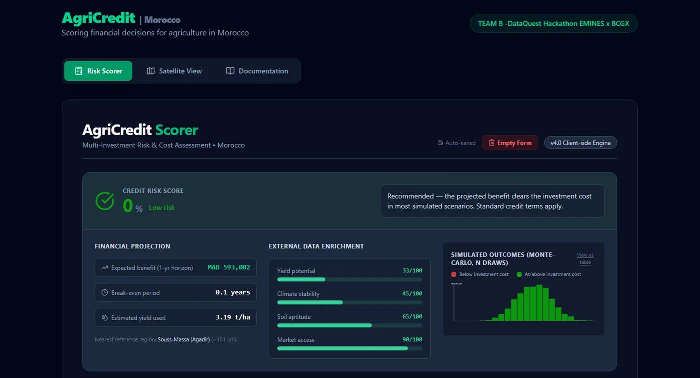
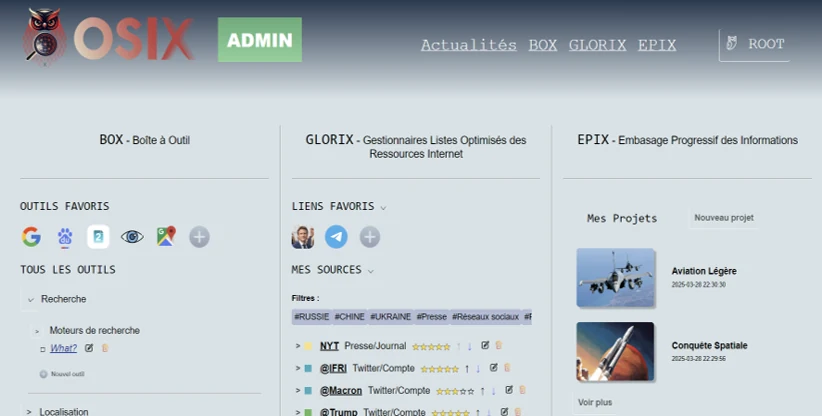

Neurons as point processes. Mean-field limits turn many noisy spikes into tractable equations; sparse and finite-size networks need sharper tools.
WPT 01 — PURPOSE
How does a brain learn, and what can AI take from it?
A brain learns from a handful of examples, on about twenty watts, with noisy spikes and synapses that only see what happens next to them. Our best models need oceans of data and power, and still don't generalize the way it does.
I come to it from applied mathematics. A network of spiking neurons can be written as a stochastic process (Hawkes processes, piecewise-deterministic Markov processes), and its mean-field limit shows how collective rhythms emerge from many noisy units, and where that picture stops holding.
That is the research I want to do: model how the brain learns and processes information from experimental data, then carry what we find over to artificial systems.
Synapses adapt from local signals only. Short-term plasticity alone can make a whole network oscillate, as in the live chart.
Recovering synaptic weights from recorded spikes, with optimal control: my research project at CMAP, starting January 2027.
WPT 02 — PROJECTS
Personal Projects
Eight projects, from research prototypes to a platform in production.
Personal project · Multimodal post-training
NeuroQA mini
Post-training Ministral 3 (3B) on Stanford's NeuroQA brain-MRI challenge, with SFT and GRPO (LoRA) loops written from scratch in PyTorch and trained on RTX 3090 GPUs. Every result is checked against a blind, text-only control model, to tell whether the gains come from reading the scans or from text priors.
- PyTorch
- SFT
- GRPO
- LoRA
- Brain MRI
Personal project · Audio ML
EarDrop
Recognizes the 30 most-spoken languages by ear, benchmarking a from-scratch acoustic classifier against a fine-tuned Whisper-small — and surfaces the audio cues that separate one language from another.
- PyTorch
- Whisper
- Audio
Research project · Operations research
Network Expansion Planning — EDF Lab
Network expansion planning in decomposed networks: replacing expensive ILP solving with max-flow and Voronoi-based algorithms. Supervised by Cécile Rottner and Sandie Balaguer.
- ILP
- Max-flow
- Voronoi
- Graphs
Research · Multi-agent
Multi-Agent Synergistic Reasoning
A three-layer explainable multi-agent system for network anomaly detection and root-cause analysis over RDF/OWL knowledge graphs: 54 deterministic SPARQL agents, 12 correlation diagnosers, one LLM explainer. 0.815 F1 against 0.508 for a standalone LLM on a 27-graph benchmark, and 100% robustness under noise.
- JaCaMo
- RDF/OWL
- SPARQL
- LLM

Personal project · Agentic HITL
ScholarMates
A human-in-the-loop workspace for writing research papers end to end: RAG over your bibliography, OCR, ArXiv and Google Scholar search, and role-specialized agents — organizer, writer, reviewer.
- React
- RAG
- OCR
Lab project · Deep learning for CV
What Happens Next? — Action Prediction on SSv2
Predicting the action in Something-Something v2 videos from only their first ~40%, before the outcome is shown, across 33 motion classes. I built the closed-world track: TSM and video-transformer models trained from scratch in PyTorch and ensembled with test-time augmentation, reaching 44.03% top-1, against 65.86% for the open-world track's LLRD fine-tuning of V-JEPA 2.
- PyTorch
- TSM
- ViT
- V-JEPA 2

Hackathon · 1st prize
AgriCredit
1st prize at the BCGX DataQuest Hackathon: a credit-risk scorer that prices farm loans in Morocco on a plot's agronomic potential rather than its land collateral. Farmer inputs are enriched with yield, climate, soil and market-access data, then run through a Monte-Carlo model of whether the investment pays for itself.
- Monte-Carlo
- Geospatial data
- Risk scoring

Defense · Full-stack
Secure Intelligence Platform
A secure workspace application for OSINT data collection, now used by six French intelligence agencies. Led the user-oriented design with high autonomy, from need survey to delivery; awarded an official commendation letter by the Ministry of Defense.
- TypeScript
- PHP
- SQL
WPT 03 — EDUCATION
Academic cursus
École Polytechnique — X24
Cycle Ingénieur Polytechnicien · PalaiseauM.Sc. in Applied Mathematics and Computer Science, specializing in machine learning. Coursework: probability theory for ML, operational research, topological data analysis, optimization for AI, deep learning, reinforcement learning.
Lycée Henri IV — CPGE
MPSI / MP* · ParisTwo years of intensive mathematics, theoretical computer science, and physics for the national competitive entrance exams. GPA 4.0/4.0 (A+); admitted to École Polytechnique and ranked 6th at ENS Lyon in the CS track.
Awards & honors
Distinctions- 1st prize, BCGX DataQuest Hackathon (2025)
- Official Commendation Letter, French Ministry of Defense (2025)
- 2nd prize, National Mathematics Olympiads (2021)
WPT 04 — EXPERIENCE
Professional experience
06/2026 — 09/2026
Monaco
Monaco
Applied AI Engineer (Intern) — Panthera Solutions
Led research on multi-agent-system personalization in a high-stakes environment: investor profile metadata injected into context to challenge a user's decision with XAI and sourced feedback, validated on real use cases in a proof of concept. Designed the agentic layer of the six-stage decision workflow for the Decision GPS application — an evidence-based LLM reasoning pipeline tracking behavioral-finance criteria and causal reasoning — and rebuilt the monitoring section as a MAS of Research, Process and Challenge agents over a market data API.
06/2025 — 06/2026
Paris
Paris
Computer Science Research Project — Orange Innovation
Designed a three-layer explainable multi-agent system (JaCaMo) for network anomaly detection and root-cause analysis over RDF/OWL knowledge graphs, combining 54 deterministic SPARQL agents with 12 correlation diagnosers and an LLM explainer. Built a reproducible 27-graph benchmark: 0.815 F1 against 0.508 for a standalone LLM, with 100% robustness under noise. Co-authoring a paper on multi-agent synergistic reasoning, targeting JFSMA @ PFIA 2027.
10/2024 — 04/2025
Strasbourg
Strasbourg
Full-Stack Engineer (Intern) — French Army Intelligence
Developed a secure workspace application for OSINT data collection (PHP, SQL, TypeScript), now used by six intelligence agencies in France. Led the user-oriented design from need survey to delivery with high autonomy; received an official Commendation Letter.
WPT 05 — THE COMPASS
The Compass — what the needle knows
Everything I've worked with, arranged by bearing. Hover a word: the needle finds it.
WPT 06 — BEYOND THE LAB
Extracurricular
Vice-President
Leading a 45-person team on a €400K data project for a leading European AI lab, overseeing quality and volume control. +180% revenue in 2025, reaching €550K.
Treasurer & Head of IT
Accounting and billing for a €1.3M career fair with over 1500 attendants. Responsible of the information systems : CRM, ERP, public website - led their full redesign of the registration platform for all attendants and the public website.
Captain
Twelve competitive seasons leading the team.